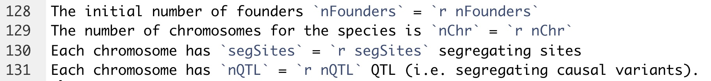

Reproducible scripting, AlphaSimR, Homeworks
Jean-Luc Jannink and Kelly Robbins
USDA-ARS / CornellJanuary 20, 2020
Last updated: 2020-01-20
Checks: 7 0
Knit directory: Lab1_7170/
This reproducible R Markdown analysis was created with workflowr (version 1.6.0). The Checks tab describes the reproducibility checks that were applied when the results were created. The Past versions tab lists the development history.
Great! Since the R Markdown file has been committed to the Git repository, you know the exact version of the code that produced these results.
Great job! The global environment was empty. Objects defined in the global environment can affect the analysis in your R Markdown file in unknown ways. For reproduciblity it’s best to always run the code in an empty environment.
The command set.seed(20200120) was run prior to running the code in the R Markdown file. Setting a seed ensures that any results that rely on randomness, e.g. subsampling or permutations, are reproducible.
Great job! Recording the operating system, R version, and package versions is critical for reproducibility.
Nice! There were no cached chunks for this analysis, so you can be confident that you successfully produced the results during this run.
Great job! Using relative paths to the files within your workflowr project makes it easier to run your code on other machines.
Great! You are using Git for version control. Tracking code development and connecting the code version to the results is critical for reproducibility. The version displayed above was the version of the Git repository at the time these results were generated.
Note that you need to be careful to ensure that all relevant files for the analysis have been committed to Git prior to generating the results (you can use wflow_publish or wflow_git_commit). workflowr only checks the R Markdown file, but you know if there are other scripts or data files that it depends on. Below is the status of the Git repository when the results were generated:
Ignored files:
Ignored: .Rproj.user/
Untracked files:
Untracked: .addToReadMe.txt
Unstaged changes:
Deleted: data/FileStructure.jpg
Deleted: data/RcodeInDescription.jpg
Note that any generated files, e.g. HTML, png, CSS, etc., are not included in this status report because it is ok for generated content to have uncommitted changes.
These are the previous versions of the R Markdown and HTML files. If you’ve configured a remote Git repository (see ?wflow_git_remote), click on the hyperlinks in the table below to view them.
| File | Version | Author | Date | Message |
|---|---|---|---|---|
| Rmd | c641e33 | jeanlucj | 2020-01-20 | Moving linked figures to see if they will appear in GitHub.io |
| html | d91a4ff | jeanlucj | 2020-01-20 | Build site. |
| Rmd | 9d95add | jeanlucj | 2020-01-20 | Touch ups on the main document |
| html | 602d7eb | jeanlucj | 2020-01-20 | Build site. |
| Rmd | cb85151 | jeanlucj | 2020-01-20 | Adding all the untracked files |
Preliminaries
Pre-preparation
If you rate your familiarity with R as “low” please go to Data Carpentry: R for Genomics in advance of the first class and do the following:
- Work through the material between at minimum chapters 1 (“Before We Start”) and 4 (“Data frames”), but preferably also 5 (“The dplyr package”).
- This website includes instructions for installing R and Rstudio and basic instruction on how to interact with R.
- Please install the
AlphaSimR,workflowr, andtidyversepackages.
Learning objectives
- Reproducible scripting
- A reproducible analysis workflow includes a predictable input file and data structure, and outputs that are described, interpreted, and put in the context of the overall project in English.
- The audience of this workflow is akin to someone who might be reviewing a manuscript derived from the work. The most important audience is yourself, six months later, or your close collaborators (e.g., lab group) who may need to carry on the work after you move on.
- Whether you like it or not, you are a computational biologist. Lab biology experiments need to be reproducible. Computational biology analyses need to be reproducible.
- R markdown and workflowr
- R markdown language. It allows you to mingle script with formatted text, with script outputs. Note that Python and c++ scripts can be incorporated into R markdown. Help pages on rmarkdown:
Cheat Sheet
Authoring Basics
In Literate Programming
workflowraims to make it easier to follow a coding workflow that will increase the communicability and reproducibility of your code, and constrain you somewhat to following that workflow. The package sets up a standard directory file structure and populates it with useful initial R markdown (.Rmd) files.
workflowralso sets up the directory as a git version control repository. We will (probably) not teach git, but we encourage you all delving into it. Assume for the purpose of this class that you can useworkflowrjust to set up the file structure.
There is more you can do with the package, and it’s worth checking it out (and its extensive documentation!)
- AlphaSimR
- AlphaSimR is a package to simulate breeding populations and tasks. It is not completely intuitive nor completely well-documented. We will get started with it here. It should help for future homework
- Homework
- Labs, including this one, will be coupled with homework. One possibility for homework will be to do it in a
workflowr-created directory, and hand in that zipped directory, or, if you go further and create a webpage out of it, just send in the URL… If all is well, this lab has a webpage here:
Lab1 GitHub webpage
I am noting, however, that on github.io, it is not rendering the within-directory-linked figures.
Document explanation
There are three components to this document: 1. Discussing “Reproducible Programming” and various practices and packages that can help out.
2. Writing a simple AlphaSimR script and describing it.
3. Setting up a homework.
In principle, we should cover the ideas of the homework in class. You will then make a clean rmarkdown script to show the ideas. The rmarkdown script can be embedded in a workflowr directory if you want. The questions to answer through the lab and homework will be indented text.
This is indented text
Further background
- R markdown is very good for documenting scripts, but less so programs. If code is linear and fairly simple, I call it a script. If code has loops, is potentially multi-purpose, and defines functions, I call it a program.
workflowrprovides acodedirectory for programs, and ananalysisdirectory for scripts. Of course, scripts can (should) refer to functions, etc., in thecodedirectory. Any raw data can go indata. Script outputs can go inoutput. Final figures and so on can go indocs.
- If you write a series of functions that you will use repeatedly, it’s probably worth making a package out of them. That is not trivial, but it’s less difficult than it sounds. You do not have to submit your package to CRAN, but can just use it internally. The documentation of functions that goes along with making a package is very helpful over time.
- If you write a program that you imagine will develop over time, learn version control (probably “git”. I don’t know any other version control…), here or here. Note that a public repository like github can be quite useful for making your data available once you publish your research. Note too that
workflowrcommands wrap a number of git commands to simplify the work flow, particularly if you are working in the RStudio environment.
- Here are some useful articles:
Simulating some classical results
This script uses AlphaSimR to simulate the “outbreak of variation” that arises when you self-fertilize a hybrid.
Loading packages
If your script depends on external packages, load them at the beginning. This shows users early on what the script dependencies are.
ip <- installed.packages()
packages_used <- c("AlphaSimR", "tidyverse", "workflowr")
for (package in packages_used){
isInstalled <- package %in% rownames(ip)
if (!isInstalled){
stop(paste("ERROR: you need to install the", package, "package"))
} else{
library(package, character.only=T)
}
}#END packages_usedLoading required package: R6── Attaching packages ─────────────────────────────────── tidyverse 1.3.0 ──✓ ggplot2 3.2.1 ✓ purrr 0.3.3
✓ tibble 2.1.3 ✓ dplyr 0.8.3
✓ tidyr 1.0.0 ✓ stringr 1.4.0
✓ readr 1.3.1 ✓ forcats 0.4.0── Conflicts ────────────────────────────────────── tidyverse_conflicts() ──
x dplyr::filter() masks stats::filter()
x dplyr::lag() masks stats::lag()
x dplyr::mutate() masks AlphaSimR::mutate()A first thing to notice from the output of loading tidyverse is the conflicts report. In particular, for example, two packages (dplyr and stats) have been loaded that have a function called filter. Since dplyr was loaded after stats, if you use the function filter, it will go to the dplyr version by default. It is dangerous to rely on what order packages have been loaded to determine which filter function you get. R syntax to prevent ambiguity is to write either dplyr::filter or stats::filter. Using that syntax will make your code more reproducible.
Document packages used
This chunk creates a “README.md” file that documents the packages and versions used for future reference.
source("code/addToREADME.R")
addToREADME(paste0("## ", rmarkdown::metadata$title), append=F)
addToREADME(c(date(), ""))
packages_used <- as_tibble(ip[packages_used, c("Package", "Version", "Built")])
# Clunky way to add the packages at the end
readme_file <- ".addToReadMe.txt"
write_tsv(packages_used, readme_file)Hyperlink the README file to the report. That makes is easy to find.
Set random seed
AlphaSimR generates many random numbers (e.g., to simulate Mendelian random segregation). If you want the result of the analysis to come out the same each time (there are pros and cons) you need to set the random seed. Note that workflowr does this by default. If you are not using that package, then be explicit.
random_seed <- 45678
set.seed(random_seed)
addToREADME(paste("The random seed is", random_seed))Script parameters
If the behavior of your script depends on parameters that you set, initialize them early on.
nFounders <- 100
nChr <- 10 # Number of chromosomes
segSites <- 1000 # Number of segregating sites _per chromosome_
nQTL <- 10 # Vary this parameter to get oligo- versus poly- genic traitsExecutable descriptions
It is easy for text descriptions around your code to become out of sync with the code. Because the descriptions are ignored by the computer during execution, they may say one thing while the script says another. That becomes confusing later when you revisit the script. One way to avoid that is “executable descriptions”. For example, rather than setting parameters in a chunk of code, you can set them “inline” in R markdown:
The initial number of founders nFounders = 100
The number of chromosomes for the species is nChr = 10
Each chromosome has segSites = 1000 segregating sites
Each chromosome has nQTL = 10 QTL (i.e. segregating causal variants).

Parameters to README
This is starting to look VERY redundant, but it can’t hurt to have the information in multiple places. Chunks of code like this do not need to be included in the report. To exclude them use the “include=FALSE” option in the chunk.
addToREADME(c(
paste("The number of founders for the simulation is", nFounders),
paste("The number of chromosomes is", nChr),
paste("There are", nQTL, "QTL per chromosome"),
paste("There are", segSites, "segregating sites per chromosome")
))
addToREADME(c("", "The packages used in this script are:"))
addToREADME(readLines(readme_file))AlphaSimR populations
The basic object of AlphaSimR is the population. To make founders, you first make founder haplotypes from a coalescent simulation, then you define simulation parameters that will link their genetic variation to phenotypic variation, then you make a first diploid population from the founder haplotypes.
# Create haplotypes for founder population of outbred individuals
# Note: default effective population size for runMacs is 100
founderHaps <- runMacs(nInd=nFounders, nChr=nChr, segSites=segSites)
# New global simulation parameters from founder haplotypes
SP <- SimParam$new(founderHaps)
# Additive and dominance trait architecture
# By default, the genetic variance will be 1
SP$addTraitA(nQtlPerChr=nQTL)
# Create a new population of founders
founders <- newPop(founderHaps, simParam=SP)
str(founders)Formal class 'Pop' [package "AlphaSimR"] with 16 slots
..@ id : chr [1:100] "1" "2" "3" "4" ...
..@ mother : chr [1:100] "0" "0" "0" "0" ...
..@ father : chr [1:100] "0" "0" "0" "0" ...
..@ gender : chr [1:100] "" "" "" "" ...
..@ nTraits: int 1
..@ gv : num [1:100, 1] -0.139 0.554 -0.103 -0.49 1.3 ...
..@ pheno : num [1:100, 1] NA NA NA NA NA NA NA NA NA NA ...
..@ ebv : num[1:100, 0 ]
..@ gxe :List of 1
.. ..$ : NULL
..@ fixEff : int [1:100] 1 1 1 1 1 1 1 1 1 1 ...
..@ reps : num [1:100] 1 1 1 1 1 1 1 1 1 1 ...
..@ nInd : int 100
..@ nChr : int 10
..@ ploidy : int 2
..@ nLoci : int [1:10] 1000 1000 1000 1000 1000 1000 1000 1000 1000 1000
..@ geno :List of 10
.. ..$ : raw [1:125, 1:2, 1:100] ec 0e 6c 87 ...
.. ..$ : raw [1:125, 1:2, 1:100] 49 59 67 e7 ...
.. ..$ : raw [1:125, 1:2, 1:100] 43 60 4a 40 ...
.. ..$ : raw [1:125, 1:2, 1:100] 20 aa 43 e5 ...
.. ..$ : raw [1:125, 1:2, 1:100] fa 80 b0 78 ...
.. ..$ : raw [1:125, 1:2, 1:100] 08 2c e0 45 ...
.. ..$ : raw [1:125, 1:2, 1:100] 52 f2 81 82 ...
.. ..$ : raw [1:125, 1:2, 1:100] 8e c8 88 14 ...
.. ..$ : raw [1:125, 1:2, 1:100] c0 5b 13 a2 ...
.. ..$ : raw [1:125, 1:2, 1:100] 16 e6 15 67 ...
.. ..- attr(*, "dim")= int [1:2] 10 1Population information
The population has ids. The @mother and @father ids are all zero because this population was made from founder haplotypes, and so does not have diploid parents. The genotypic values gv of the population are calculated for the trait created using SP$addTraitA(nQtlPerChr=nQTL). Given that there are 10 chromosomes and 10 QTL per chromosome, there are 3^(nChr*nQTL) = 5.153775210^{47} different possible genotypic values. These genotypic values are accessible with the function gv(founders)
From here, you can treat this population like a named vector using the square braces extraction operator [ ]. Extract individuals by their @id or just by their order in the population using an integer index. For example, pick three random individuals from a population and list their ids. Pick the one with the first id in alphabetical order.
test <- founders[sample(nFounders, 3)]
testID <- test@id
firstInd <- test[order(testID)[1]]
print(testID)[1] "5" "94" "97"print(firstInd)An object of class "Pop"
Ploidy: 2
Individuals: 1
Chromosomes: 10
Loci: 10000
Traits: 1 print(firstInd@id)[1] "5"Outbreak of variation
In the early 20th century, Emerson and East showed that if you crossed to inbreds, the hybrid had similar variation to each inbred, but if you then selfed the hybrid, the offspring varied substantially. This code simulates that result. First, self the founders to homozygosity. The function self self-fertilizes individuals from the population. By default, it creates one selfed individual per parent (controllable with the parameter nProgeny), so this works nicely for single-seed descent.
# Self-pollinate to for a few generations
nGenSelf <- 4
inbredPop <- founders
for (gen in 1:nGenSelf){
inbredPop <- self(inbredPop)
}Check homozygosity
Just a sanity check that this has, in fact, created a population of 100 individuals that are appropriately homozygous. Loci are coded 0, 1, 2. So qtl == 1 represents the case were a locus is heterozygous. sum(qtl == 1) counts those cases.
qtl <- pullQtlGeno(inbredPop)
if (nrow(qtl) != nFounders) stop("The number of individuals is unexpected")
if (ncol(qtl) != nChr * nQTL) stop("The number of QTL is unexpected")
fracHet <- sum(qtl == 1) / (nFounders * nChr * nQTL)
cat("Expected fraction heterozygous", 1 / 2^nGenSelf, "\n",
"Observed fraction heterozygous", fracHet, "+/-",
round(2*sqrt(fracHet*(1-fracHet)/(nFounders*nChr*nQTL)), 3), "\n")Expected fraction heterozygous 0.0625
Observed fraction heterozygous 0.0162 +/- 0.003 What was wrong with my reasoning about the Expected fraction heterozygous?
Simulate outbreak of variation
Just for fun, we will pick the pair of most average or most extreme inbred individuals, in terms of their genetic value, cross thpse pairs, then self-fertilize them to test their variation. We will assume a trait that has a heritability of 0.5 in the base, non-inbred population population. In practice, that means an error variance of 1. Here, I pick the average pair by finding the order and picking two in the middle. I pick the extreme pair by finding the order and picking the first and last.
indGVs <- gv(inbredPop)
averageInd <- inbredPop[order(indGVs)[50:51]]
extremeInd <- inbredPop[order(indGVs)[c(1, nFounders)]]Cross the pair to make F1 hybrid
The crossPlan is a two-column matrix with as many rows as the number of crosses you want to make, the first column is the @id or the index of the seed parent, and likewise for the pollen parent in the second column. To make an F1, you just want to make one cross, so the matrix is one row. You just want to cross individual 1 with individual 2, so the row contains 1:2.
crossPlan <- matrix(1:2, nrow=1, ncol=2)
f1_average <- makeCross(averageInd, crossPlan)
f1_extreme <- makeCross(extremeInd, crossPlan)Make F2 and observe phenotypic variance
When you first make a population, AlphaSimR does not assume it has been phenotyped. You can phenotype it using the setPheno function. Note that if you use setPheno on the same population a second time, that will overwrite the phenotypes from the first time. I also print the genotypic variance that can be retrieved using the function varG. Really, varG gives all we need to know, but of course that variance is generally not observable in non-simulated reality.
f2_average <- self(f1_average, nProgeny=100)
f2_average <- setPheno(f2_average, varE=1)
cat("Genotypic variance of F2 between average pair", round(varG(f2_average), 3))Genotypic variance of F2 between average pair 0.346hist(pheno(f2_average), main="Histogram of Average-Pair F2 Phenotypes")
f2_extreme <- self(f1_extreme, nProgeny=100)
f2_extreme <- setPheno(f2_extreme, varE=1)
cat("Genotypic variance of F2 between extreme pair", round(varG(f2_extreme), 3))Genotypic variance of F2 between extreme pair 1.093hist(pheno(f2_extreme), main="Histogram of Extreme-Pair F2 Phenotypes")
Observe F1 phenotypic variance
We only made a single F1 plant. AlphaSimR can’t give that plant different phenotypes. So to pretend to be Emerson and East, we have to make, say, 100 F1 individuals. I will do this just for the f1_extreme case. Here, varG may or may not be zero, depending on how many generations of selfing you did.
crossPlan <- matrix(1:2, nrow=100, ncol=2, byrow=T)
f1_extremeMany <- makeCross(extremeInd, crossPlan)
f1_extremeMany <- setPheno(f1_extremeMany, varE=1)
cat("Genotypic variance of F1 between extreme pair", round(varG(f1_extremeMany), 3))Genotypic variance of F1 between extreme pair 0hist(pheno(f1_extremeMany), main="Histogram of Extreme-Pair *F1* Phenotypes")
What conditions will tend to make the outbreak of variation under the “average” scenario similar to the “extreme” scenario?
sessionInfo()R version 3.6.1 (2019-07-05)
Platform: x86_64-apple-darwin15.6.0 (64-bit)
Running under: macOS Mojave 10.14.6
Matrix products: default
BLAS: /Library/Frameworks/R.framework/Versions/3.6/Resources/lib/libRblas.0.dylib
LAPACK: /Library/Frameworks/R.framework/Versions/3.6/Resources/lib/libRlapack.dylib
locale:
[1] en_US.UTF-8/en_US.UTF-8/en_US.UTF-8/C/en_US.UTF-8/en_US.UTF-8
attached base packages:
[1] stats graphics grDevices utils datasets methods base
other attached packages:
[1] forcats_0.4.0 stringr_1.4.0 dplyr_0.8.3 purrr_0.3.3
[5] readr_1.3.1 tidyr_1.0.0 tibble_2.1.3 ggplot2_3.2.1
[9] tidyverse_1.3.0 AlphaSimR_0.11.0 R6_2.4.1 workflowr_1.6.0
loaded via a namespace (and not attached):
[1] tidyselect_0.2.5 xfun_0.11 haven_2.2.0 lattice_0.20-38
[5] colorspace_1.4-1 vctrs_0.2.1 generics_0.0.2 htmltools_0.4.0
[9] yaml_2.2.0 rlang_0.4.2 later_1.0.0 pillar_1.4.3
[13] withr_2.1.2 glue_1.3.1 DBI_1.1.0 dbplyr_1.4.2
[17] modelr_0.1.5 readxl_1.3.1 lifecycle_0.1.0 munsell_0.5.0
[21] gtable_0.3.0 cellranger_1.1.0 rvest_0.3.5 evaluate_0.14
[25] knitr_1.26 httpuv_1.5.2 fansi_0.4.0 broom_0.5.3
[29] Rcpp_1.0.3 promises_1.1.0 backports_1.1.5 scales_1.1.0
[33] jsonlite_1.6 fs_1.3.1 hms_0.5.2 digest_0.6.23
[37] stringi_1.4.3 grid_3.6.1 rprojroot_1.3-2 cli_2.0.0
[41] tools_3.6.1 magrittr_1.5 lazyeval_0.2.2 crayon_1.3.4
[45] whisker_0.4 pkgconfig_2.0.3 zeallot_0.1.0 xml2_1.2.2
[49] reprex_0.3.0 lubridate_1.7.4 rstudioapi_0.10 assertthat_0.2.1
[53] rmarkdown_2.0 httr_1.4.1 nlme_3.1-143 git2r_0.26.1
[57] compiler_3.6.1